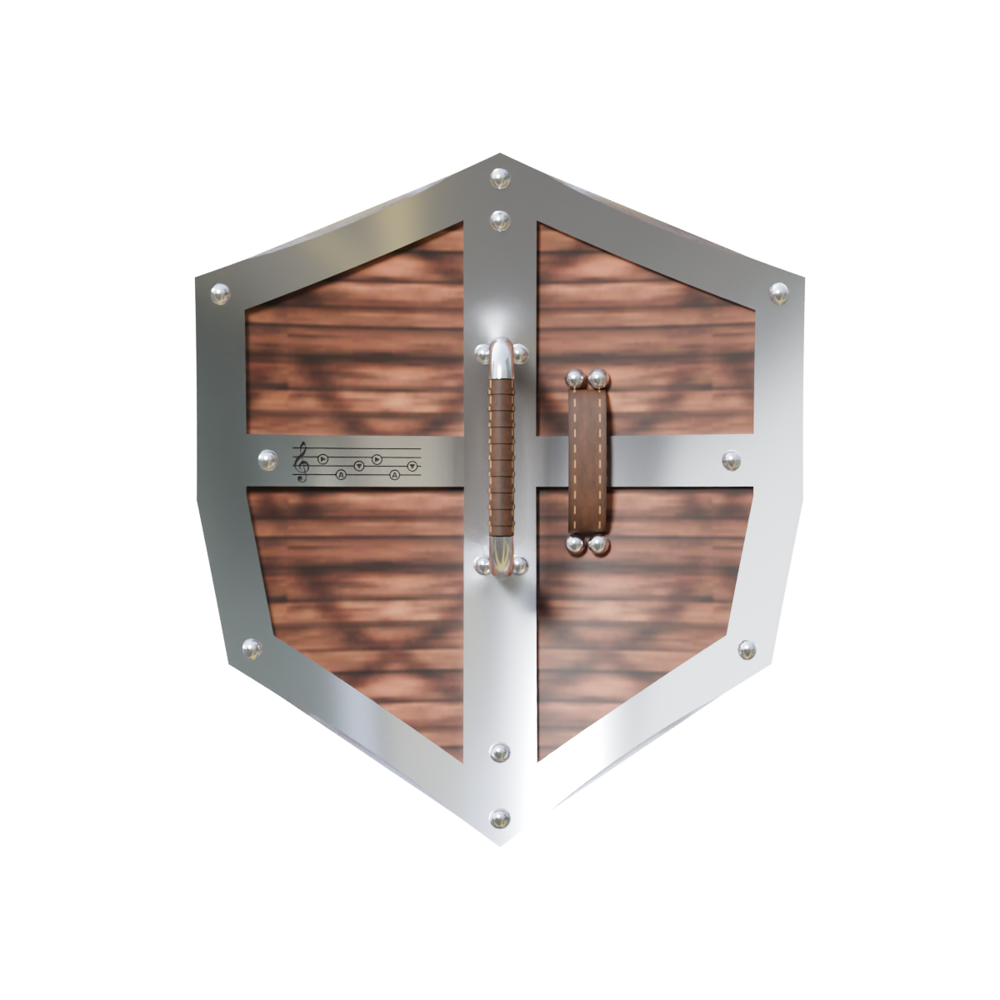
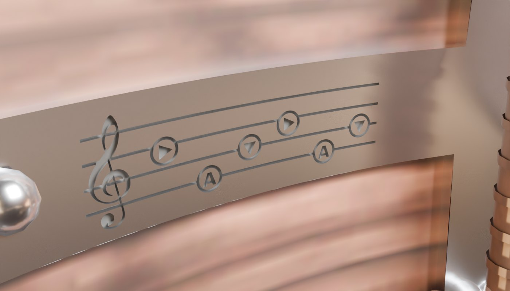
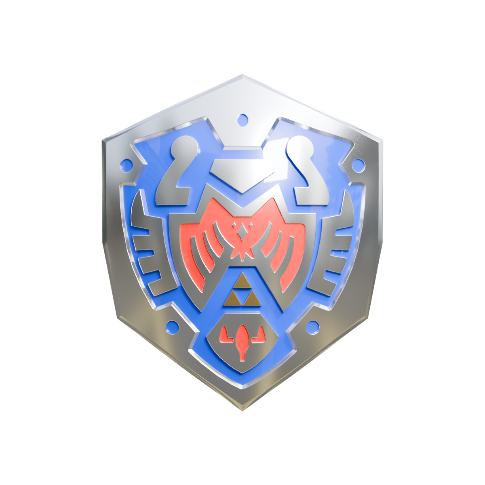
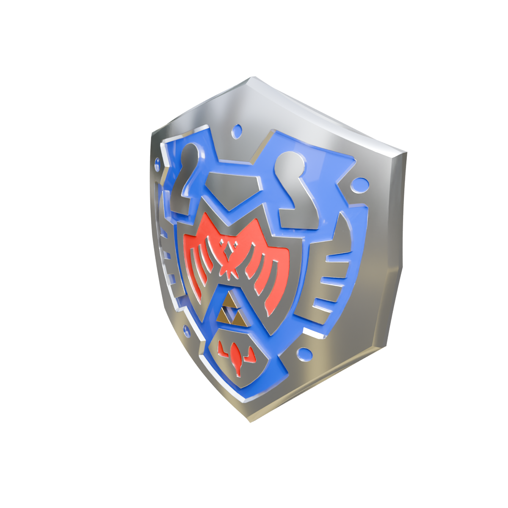
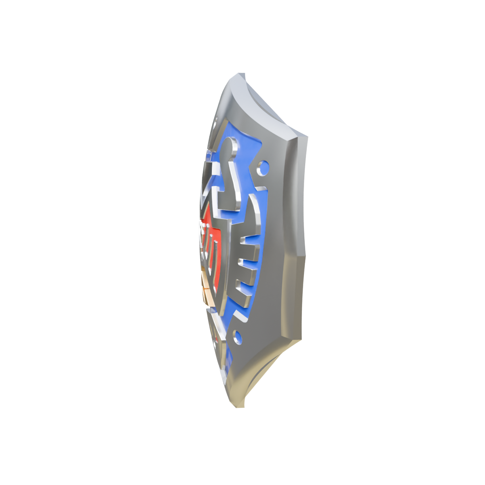
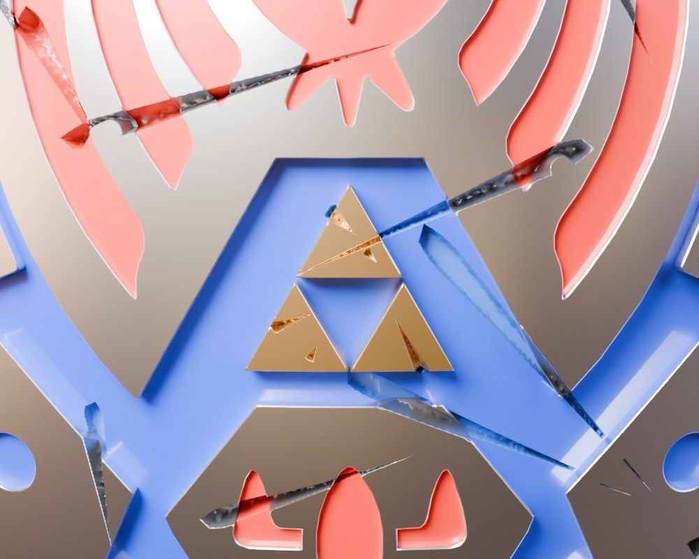
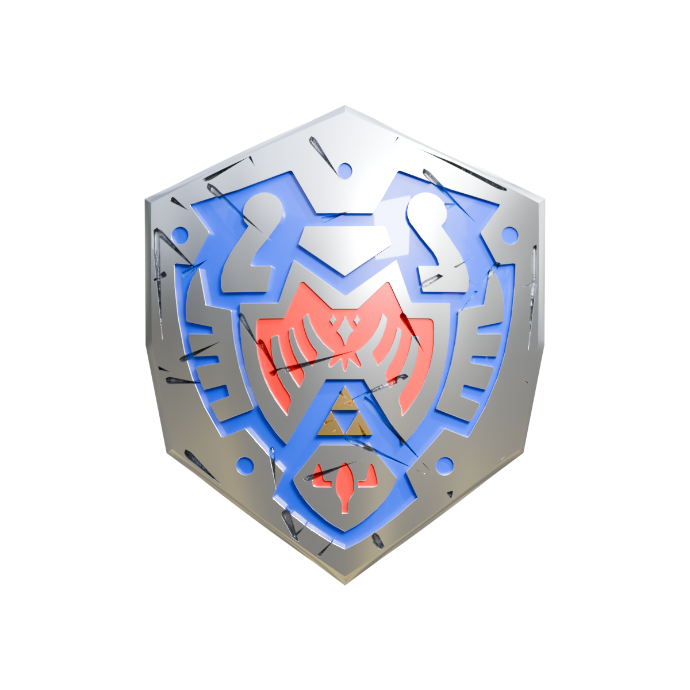
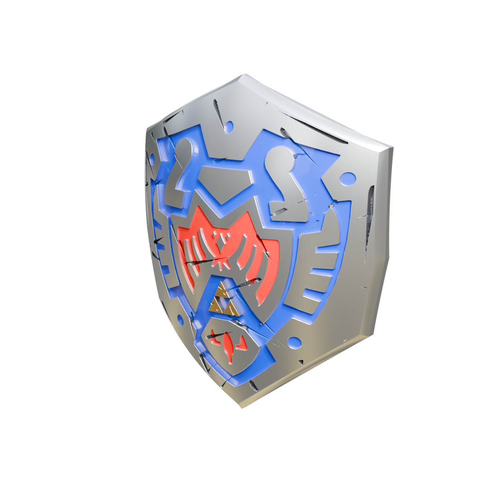
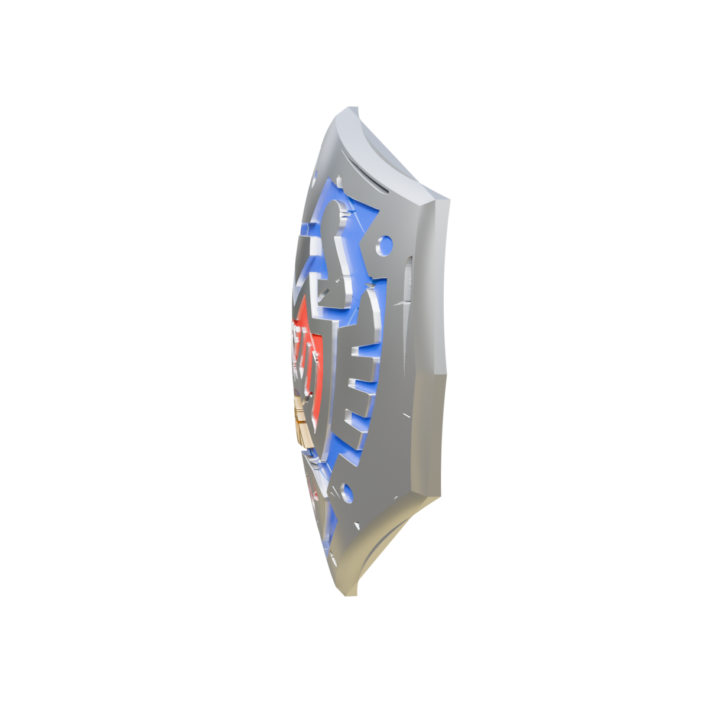
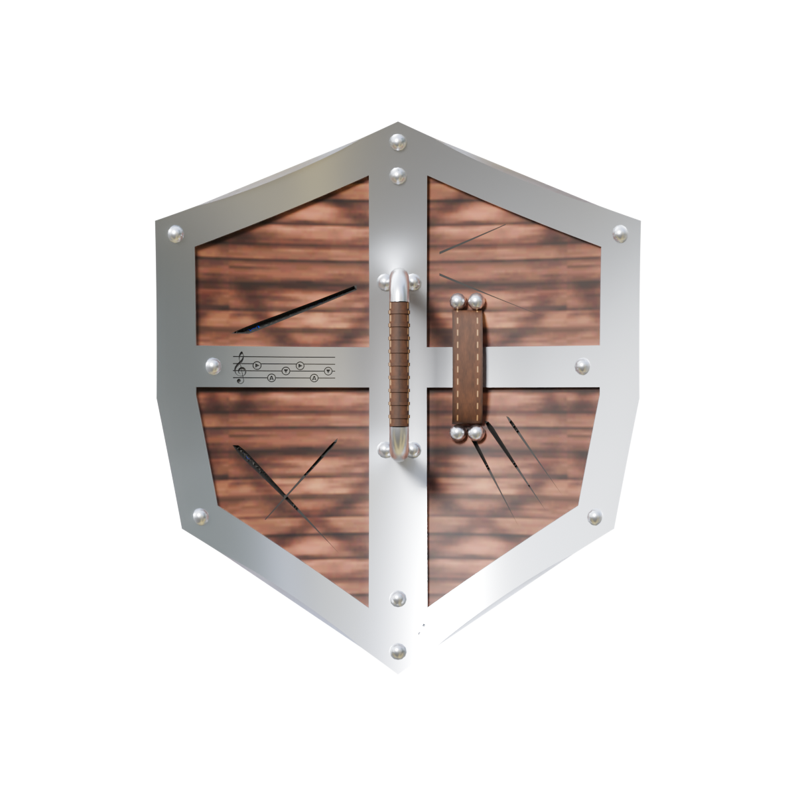

The Legend of Zelda · Majora's Mask
com som · toque ou cliquesound on · tap or click
Amanhecer do
Primeiro Dia
Dawn of
the First Day
— Restam 72 horas —
— 72 Hours Remain —
Este mod substitui o modelo do Hero’s Shield por uma versão remodelada em 3D, com acabamento metálico, relevos e costas detalhadas, com a Song of Time gravada no metal. Compatível com The Legend of Zelda: Majora’s Mask Recompiled.
A frente foi refeita em relevo a partir da arte oficial, com prata polida, Triforce dourada e esmalte azul e vermelho. O pacote ainda traz o Young Link de Hyrule Warriors, com texturas melhoradas e as proporções do Link clássico do N64, e equipamentos de metal espelhado.
This mod replaces the Hero’s Shield model with a redesigned 3D version featuring a metallic finish, raised details and a detailed back with the Song of Time engraved in the metal. Compatible with The Legend of Zelda: Majora’s Mask Recompiled.
The front has been rebuilt in relief from the official artwork, with polished silver, a golden Triforce and blue and red enamel. The pack also includes Hyrule Warriors Young Link, with improved textures and the proportions of the classic N64 Link, plus mirror-steel gear.
Windows · Linux · Steam Deck · macOS
Prints do próprio jogo com o cenário em HD (MM-Reloaded), mesmo lugar e mesma pose. Arraste a linha: à esquerda o modelo original do N64, à direita o mod.
Straight from the game with HD scenery (MM-Reloaded), same spot and same pose. Drag the line: left is the original N64 model, right is the mod.
Baseado no Young Link de Hyrule Warriors: rosto, cabelo, túnica e cinto em HD, do mod do PxExYxTxOxN, portado para o Recomp com o esqueleto e as animações do próprio jogo.
Based on the Hyrule Warriors Young Link: HD face, hair, tunic and belt, from PxExYxTxOxN's mod, ported to the Recomp on the game's own skeleton and animations.
Lâminas e bainhas com brilho de metal espelhado: o modelo da Kokiri Sword serve para a Kokiri e a Razor, a Master Sword ocupa o lugar da Gilded, e há a bainha nas costas.
Blades and sheaths with a mirror-steel shine: the Kokiri Sword model is used for both the Kokiri and Razor swords, the Master Sword replaces the Gilded Sword, and there is the sheath on his back.

O Hero's Shield reconstruído da arte oficial: relevo de prata e ouro na frente, e atrás madeira, faixas de metal e uma empunhadura de verdade que o Link segura.
The Hero's Shield rebuilt off the official artwork: silver and gold relief on the front, and on the back wood, metal bands and a real grip that Link actually holds.

“Você encontrou um destino terrível, não foi?”
“You've met with a terrible fate, haven't you?”
— Vendedor de Máscaras Felizes— Happy Mask Salesman
Um detalhe gravado no metal do escudo para o herói nunca esquecer o caminho de volta ao Primeiro Dia.
A detail engraved in the metal of the shield so the hero never forgets the way back to the First Day.
Restam 72 horas72 Hours Remain
Três peças, instaladas de uma vez. Use só o escudo, só o Link ou o conjunto completo (menu L + A). O escudo Aftermath, versão gasta do Artwork HD, vem junto (veja mais abaixo).
Three pieces, installed in one go. Use just the shield, just Link, or the full set (L + A menu). The Aftermath shield, a worn version of Artwork HD, comes along (see below).
Frente traçada da arte oficial em relevo de prata e ouro. Costas com madeira, faixas de metal rebitadas, alça de couro costurada e uma empunhadura que o Link segura de verdade. Também disponível em 3D (.glb + .blend).
Front traced from the official artwork in silver and gold relief. Back with wood, riveted metal bands, a stitched leather strap and a grip Link actually holds. Also available in 3D (.glb + .blend).
Troca o modelo do Link pelo Young Link de Hyrule Warriors em HD, com a espada bem encaixada na mão.
Swaps the Link model for the HD Hyrule Warriors Young Link, with the sword seated properly in his hand.
O modelo refletivo da Kokiri Sword vale para as espadas Kokiri e Razor. A Master Sword ocupa o lugar da Gilded Sword, o Hylian Shield aparece se você não escolher outro Hero's Shield, e há também o Mirror Shield da lua crescente. Tudo com brilho de metal.
The reflective Kokiri Sword model is used for both the Kokiri and Razor swords. The Master Sword replaces the Gilded Sword, the Hylian Shield shows up when no other Hero's Shield is picked, and there is also the Crescent Moon Mirror Shield. All with a metal shine.
Renderizado no Blender a partir do mesmo modelo que vai para o jogo.
Rendered in Blender from the same model that goes into the game.




Em Termina, todos esquecem. Quando a Song of Time é tocada, tudo retorna ao início.
In Termina, everyone forgets. When the Song of Time is played, everything returns to the beginning.
Este é o Hero's Shield após incontáveis ciclos. Cada marca carrega a lembrança de um golpe que não pôde ser evitado, uma cicatriz que nem mesmo o tempo conseguiu apagar.
This is the Hero's Shield after countless cycles. Each mark carries the memory of a blow that could not be avoided, a scar that not even time could erase.
No menu L + A, em Hero's Shield, escolha Hero's Shield Aftermath. Mesmo desenho do Artwork HD, com cortes de lâmina no esmalte, a Triforce rachada e as costas marcadas. A Song of Time continua gravada.
In the L + A menu, under Hero's Shield, pick Hero's Shield Aftermath. Same design as Artwork HD, with blade cuts in the enamel, a cracked Triforce and a scarred back. The Song of Time is still engraved.




Tenha o Zelda 64: Recompiled 1.2.2 ou mais novo, instalado e aberto pelo menos uma vez, e feche o jogo. O instalador copia os mods, baixa o Player Model Manager com as dependências e, se você ainda não escolheu outros modelos, já deixa o Link e o escudo selecionados.
Have Zelda 64: Recompiled 1.2.2 or newer, installed and started at least once, then close it. The installer copies the mods, downloads Player Model Manager with its dependencies and, if you haven't picked other models yet, selects Link and the shield for you.
Ou cole no PowerShell:
Or paste into PowerShell:
irm https://raw.githubusercontent.com/reset-hightide/heros-shield-artwork-hd/main/install.ps1 | iexcurl -fsSL https://raw.githubusercontent.com/reset-hightide/heros-shield-artwork-hd/main/install.sh | shcurl -fsSL https://raw.githubusercontent.com/reset-hightide/heros-shield-artwork-hd/main/install.sh | sh✨ Pronto! Abra o jogo. Para trocar de modelo: L + A (menu do Player Model Manager).
✨ Done! Start the game. To switch models: L + A (Player Model Manager menu).
Mod criado porMod by Bruno Gebara (reset-hightide)
Baseado no trabalho de:
Built on the work of:
Achou um erro, tem uma ideia ou quer deixar um comentário? Escreva aqui e escolha como enviar: pelo WhatsApp ou por e-mail.
Found a bug, have an idea or just want to leave a comment? Write it here and choose how to send it: by WhatsApp or by e-mail.